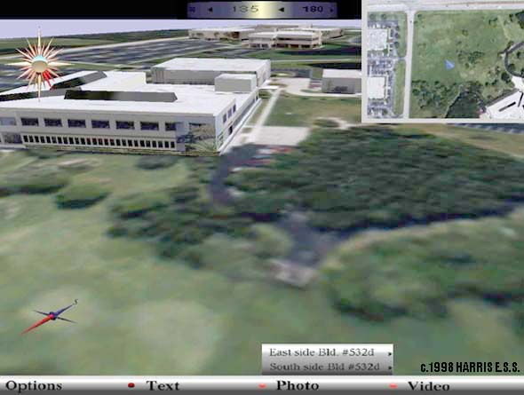
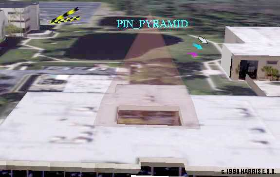
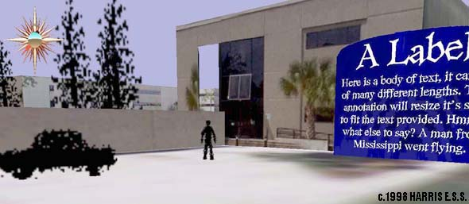
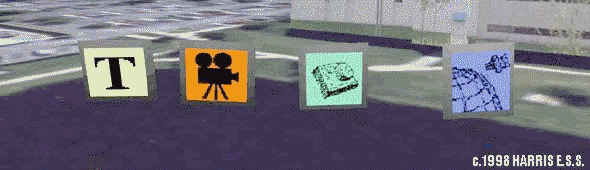

Internship
work for Harris E.S.S., 1998
RealSite Viewing
application annotations
I was requested
to add annotations and other objects to the
viewing application for the RealSite project.
RealSite extrudes urban scenes from multiple air
and or satellite images. Once ground geometry
(buildings) are realized into three dimensions
the images used to acquire the geometry are
applied as textures. The result is a model which
closely represents the urban scene.
My work was more
or less very general, a great deal of freedom was
permitted in what I was to create. Here I will
display some samples, but first let me introduce
you to the viewer. Below is a full screen shot of
the viewing application with just about
everything 'turned on'. There are no
'annotations' in this scene, however, the rose
compass and bottom menu are my work.

At the top of the
screen is a heading indicator, to the right a map
inset, and in the lower left corner a needle
compass. These were implemented before my
arrival. The view is of a prototype geometry
model (not actually created by RealSite) and
shows Harris buildings.
A rose compass is
located in the upper left, which is the last
object I created. The heading of the user is
indicated by highlighting the petals with red
(currently a South East heading). An attitude
ball displays pitch and roll (indicating where
the horizon should be). A small black stud
indicates altitude. This object took ~16 hours to
implement using Performer (in which all my work was
done).
A menubar is on
the bottom of the screen, it is a prototype for a
metadata console. Certain types of information
may not be displayed graphically in the world
model, when that data seems relevant the data
console indicates data availability by flashing
LEDs. The user may then browse through available
data and optionally display, save, &tc. (This
is a prototype, only the appearance was
implemented)
Below arrows and
a volume container are displayed. The view is of
the Harris wickham site, where I worked. The
large dark blob in the center is a lake =)

The five 2D
arrows in the scene (Two yellow and black, white
and black, cyan, and pink) are samples of a wide
range of arrows which dynamically rotate about
their directional axis to maintain maximum
visibility for the user. Some arrows have color
animation for motion and blinking. There is also
an arrow which simply receives a texture with
alpha channel so that any drawn arrow may be
used.
In the center is
a transparent pyramid, with label. It, and it's
many variations, are intended to enclose large
volumes of space. Here a small one is used to
mark an atrium which might have been overlooked
otherwise. The label on top (unimaginatively the
label reads 'PIN_PYRAMID') hovers around the
volume and uses many techniques to maintain high
visibility, including circular translation,
rotation, and scaling with attention to display
resolution. Variations also include narrow
formations which mark a single position well.
Below is the
entrance to one of the wickham buildings.

To help clarify
scale to the user, silhouettes of a man, car, and
trees are provided. They have a 'billboarding
action' which allows them to rotate for
visibility, and the man 'walks' a simple path.
Any texture may easily be used for a silhouette.
To the right is a
sign capable of holding any amount of text.
Normally it is lowered so that only the large
label is visible. A heuristic determines when the
sign should raise its self to be visible, or
perhaps the user may simply click the label to
raise the sign (not implemented).

Above are four
simple icons intended to represent
metatdata(text, video, photo, geo/spatial) in the
scene. They have many deforming behaviors which
attempt to make them look 'happy' (that's what
the man asked for..). These include a wobbling,
bouncing, and spinning approach. The icons
position relative to the user determines action
type and amount. For example, when far away the
icons spin but when approached they rotate to
face the user.
These objects,
and additional variations, were
described in a final report.
Thanks go to
Harris, and Mr. Ellery Chan, the man(boss).
|